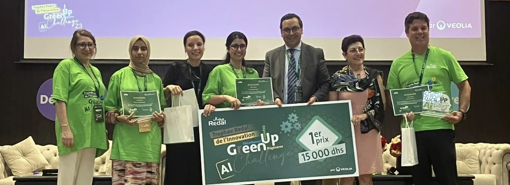

WINCOM 2026BEST PAPER2026
Awards and honours · 2026
Best Paper Award — WINCOM 2026
Reda Elalaouy Elmhamdi received a Best Paper Award at WINCOM 2026.
View the awardAwards, doctoral admissions and programme information.
Reda Elalaouy Elmhamdi received a Best Paper Award at WINCOM 2026.
View the awardCharaf Orhanou and Doha Boukhanni received awards at ICATH 2026 for their scientific contributions.
View the awardAn LRIT PhD student received the Best PhD Thesis Pitch Award in the thesis pitch competition at MECOM 2026. This award recognises the presentation of the thesis.
View the award
First prize in the Green Up Challenge IA hackathon, recorded among the laboratory’s awards.
View the award ↗For admissions, consult the official announcements and timetable of the Faculty of Sciences of Rabat ↗.